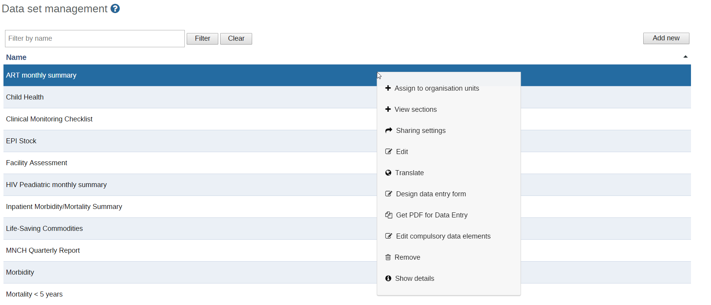

|  |
A data set has several properties that must be entered when creating a new one.
Data set management
Assign organisation units to data sets: This function will allow you to assign individual organisational units to a data set. Only organisation units which have been assigned to a data set will be allowed to enter data into the data set.
View sections: Allows you to add or remove sections to the data set as required. These sections do not apply to custom forms.
Design data entry form. Refer to the section on custom data entry forms for detailed information of how to use this function.
Edit compulsory data elements: This dialog will allow you to add or remove data elements which will be marked as compulsory during data entry.
Click Apps > Maintenance > Data set > Data set.
Click the yellow plus button.
In the Name field, define the precise name of the data set.
In the Short name field, define a short name for the data set.
Typically, the short name is an abbreviation of the full data set name. This attribute is often used to display the name of the data set where space is limited.
(Optional) In the Code field, assign a code.
In the Description field, type a description of the data set.
Enter the number of Expiry days.
The number of expiry days controls for how long it should be possible to enter data in data entry for this data set. Expiry days refer to the number of days after the end date of the selected data entry period where the data entry form should be open for entry. After the number of days has expired, the data set will be locked for further entry.
You can set manual exceptions to this using the lock exception functionality in data administration module.
![[Note]](resources/images/admon/note.png)
Note To allow data entry into all possible historical time periods, set the number of expiry days to zero.
If you want it to be possible to enter data for future periods, type the number of periods in the Open future periods for data entry field.
The value is the number of future periods which are available for data entry.
Example 6.1. Open future periods for data entry
For a monthly data set a value of 2 allows you to enter data for 2 months in advance. This is useful for example for population, target and planning data.
In the Days after period to qualify for timely submission field, type the number of days in which data can be entered to be considered reported on time. "timely."
To verify the number of timely reports submitted, go to Reports > Reporting rate summary.
Select a Period type.
The period type defines the frequency of reporting for the particular data set. The frequency can for example be daily, quarterly or yearly.
You can set the data collection frequency for a data set through the period type property.
Select a Category combination to assign it to the data set.
In Complete notification recipients, select a user group that should receive a message when the data set is marked as complete in data entry.
The message is delivered through the DHIS 2 messaging system.
If you want the user who entered the data to receive a message when the data set is marked as complete in data entry, select Send notification to completing user.
The message is delivered through the DHIS messaging system.
If you want data for the data set to be Approved, select a Data approval workflow.
See the Data approval section.
Enable for Java mobile client: Sets whether or not the data set can be used within the Java mobile DHIS 2 application.
If you want it to be mandatory to fill all values for a data element in data entry if one or more values have been filled, select All fields for data elements required.
Defines whether it is mandatory to fill all values for a data element in data entry if one or more values have been filled.
This means that if the you enter one data value for a data element in an entry field (i.e. for a category option combination), then you must enter data for all fields belonging to that data element (i.e. all category option combinations).
Complete allowed only if validation passes: Controls whether it should be possible to mark a data entry form as complete only if the validation of that form is successful. Default behavior is yes. If set to no, then a user cannot mark the form complete if validation fails.
Missing values requires comment on complete: Sets whether or not any missing values require comment to justify their absence.
Select a Legend set.
Skip offline: Controls whether this data entry form should be downloaded and saved in the user's web browser. Normally you should leave this on no, which is the default behavior. If you have forms which are rarely used and are very big you can consider setting it to yes to speed up initial loading of the data entry module.
Data element decoration
Render sections as tabs: For section based data forms, this option will allow you to render each section as a tab horizontally above the data set. This is useful for long data sets as it allows appropriate sections to be selected quickly without going through the entire form.
Render vertically
Select data elements
Select indicators
Indicators can also be added to data sets and will be available to be placed in custom data entry forms when they need to be shown along with data elements on the same data entry form.
Click Save.
Assign organisation units to the data set:
Skip data mart aggregation: Define whether data for this data set should be skipped during data mart generation. You should leave this on no, which is the default behavior, in most situations. Can be useful if you have limited server resources and are setting up new experimental data sets.
Your data set will then be ready to be used within the Data Entry app for the org units that you have assigned and for periods according to your selected frequency (period type).